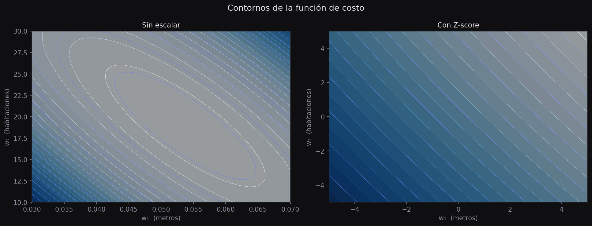
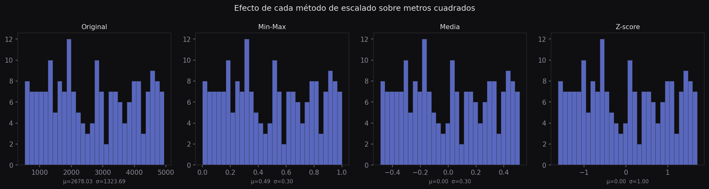
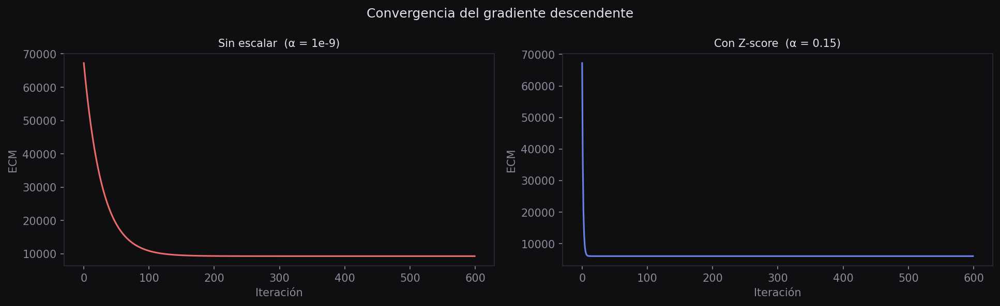

Escalado de Features
Cuando las variables de entrada tienen rangos muy distintos, el gradiente descendente se vuelve lento e inestable. El escalado corrige ese desequilibrio y permite que el optimizador converja de forma eficiente.
El problema de las unidades
Imagina que estás entrenando un modelo para predecir el precio de una casa. Tienes dos variables: los metros cuadrados del terreno (valores entre 500 y 5 000) y el número de habitaciones (valores entre 1 y 8).
Para el gradiente descendente, un cambio de 1 unidad en metros cuadrados y un cambio de 1 unidad en habitaciones parecen equivalentes. Pero no lo son: en metros cuadrados, pasar de 500 a 501 es insignificante; en habitaciones, pasar de 1 a 2 es un cambio del 100%.
Esta asimetría hace que la función de pérdida tenga una forma alargada y desequilibrada. El gradiente apunta en una dirección sesgada, y el algoritmo zigzaguea en lugar de converger directo al mínimo.
El escalado de features transforma cada variable para que opere en un rango comparable. Esto no cambia la información del dataset — solo cambia las unidades en las que se mide cada variable, de modo que el optimizador trate a todas por igual.
Para ver el problema en código, observa cómo los rangos de dos variables pueden diferir drásticamente:
import numpy as np
import pandas as pd
# Datos sintéticos: metros cuadrados y habitaciones
np.random.seed(42)
metros = np.random.uniform(500, 5000, 200) # rango: 500 – 5000
habitaciones = np.random.randint(1, 9, 200) # rango: 1 – 8
print(f"metros — min: {metros.min():.0f}, max: {metros.max():.0f}, std: {metros.std():.1f}")
print(f"habitaciones — min: {habitaciones.min()}, max: {habitaciones.max()}, std: {habitaciones.std():.2f}")
# metros — min: 506, max: 4994, std: 1282.5
# habitaciones — min: 1, max: 8, std: 2.29La desviación estándar de metros es más de 500 veces mayor que la de habitaciones. Cuando el gradiente descendente intenta optimizar ambos parámetros al mismo tiempo, el desequilibrio distorsiona la dirección del descenso.
Contornos de la función de costo
La forma más clara de entender el problema es visualizando los contornos de la función de costo. Piensa en ellos como las curvas de nivel de un mapa topográfico: cada curva une todos los puntos con el mismo valor de pérdida.
Cuando las features tienen escalas muy diferentes, esos contornos forman elipses muy alargadas. El gradiente siempre es perpendicular a los contornos, lo que significa que apunta en la dirección "ancha" de la elipse, no hacia el mínimo. El resultado: muchos pasos en zigzag antes de llegar al centro.
Después del escalado, los contornos se vuelven circulares (o casi). El gradiente apunta directo al mínimo desde cualquier punto de partida.
import matplotlib.pyplot as plt
import matplotlib.gridspec as gridspec
def costo(w1, w2, X1, X2, y):
"""ECM para un modelo lineal con dos features."""
pred = w1 * X1 + w2 * X2
return ((y - pred) ** 2).mean()
# Generamos datos con escalas muy diferentes
np.random.seed(0)
X1 = np.random.uniform(500, 5000, 100) # metros cuadrados
X2 = np.random.randint(1, 9, 100) # habitaciones
y = 0.05 * X1 + 20 * X2 + np.random.randn(100) * 50
# Versión escalada (z-score)
X1_s = (X1 - X1.mean()) / X1.std()
X2_s = (X2 - X2.mean()) / X2.std()
fig, axes = plt.subplots(1, 2, figsize=(12, 5))
fig.suptitle("Contornos de la función de costo", fontsize=13, color="#e2e2e8")
fig.patch.set_facecolor("#0f0f11")
for ax, (xa, xb, title) in zip(axes, [
(X1, X2, "Sin escalar"),
(X1_s, X2_s, "Con escalado Z-score"),
]):
# Grilla de parámetros
wa = np.linspace(-0.2, 0.2, 200) if "Sin" not in title else np.linspace(-0.2, 0.2, 200)
wb = np.linspace(-100, 100, 200) if "Sin" in title else np.linspace(-100, 100, 200)
if "Sin" in title:
wa = np.linspace(0.03, 0.07, 200)
wb = np.linspace(10, 30, 200)
else:
wa = np.linspace(-5, 5, 200)
wb = np.linspace(-5, 5, 200)
WA, WB = np.meshgrid(wa, wb)
Z = np.array([[costo(a, b, xa, xb, y) for a in wa] for b in wb])
ax.set_facecolor("#0f0f11")
ct = ax.contour(WA, WB, Z, levels=20, cmap="Blues")
ax.set_title(title, color="#e2e2e8", fontsize=11)
ax.tick_params(colors="#8a8a9a")
for spine in ax.spines.values():
spine.set_edgecolor("#2a2a30")
ax.set_xlabel("w₁", color="#8a8a9a")
ax.set_ylabel("w₂", color="#8a8a9a")
plt.tight_layout()
plt.show()
Ejemplo Observar la diferencia de forma en los contornos
Al graficar los contornos verás que sin escalado la elipse es muy estrecha y alargada. Con escalado, se acerca a un círculo. Para cuantificarlo, compara el ratio entre el eje mayor y el eje menor de los contornos: un ratio cercano a 1 indica buena condición del problema.
En términos de álgebra lineal, este ratio está relacionado con el número de condición de la matriz de features \(X^T X\). Un número de condición alto (miles o millones) indica que el gradiente descendente va a sufrir.
Tres formas de escalar
Existen varias técnicas de escalado. Todas comparten el objetivo: llevar las features a un rango más manejable. La elección depende del tipo de datos y del algoritmo.
Escalado min-max
El escalado min-max comprime cada variable al rango \([0, 1]\). Toma el valor mínimo como 0 y el máximo como 1; el resto se distribuye proporcionalmente.
Es simple e intuitivo, pero tiene un punto débil: es sensible a los valores atípicos. Si hay un outlier en 10 000 cuando el resto de valores está entre 500 y 2 000, ese outlier define el máximo y comprime al resto en una pequeña franja.
def escalar_minmax(x):
return (x - x.min()) / (x.max() - x.min())
metros_mm = escalar_minmax(metros)
print(f"antes — min: {metros.min():.0f}, max: {metros.max():.0f}")
print(f"después — min: {metros_mm.min():.4f}, max: {metros_mm.max():.4f}")
# antes — min: 506, max: 4994
# después — min: 0.0000, max: 1.0000Normalización por media
La normalización por media centra los datos alrededor de cero usando la media, y divide por el rango. El resultado queda aproximadamente en el intervalo \([-0.5,\; 0.5]\).
A diferencia del escalado min-max, esta versión garantiza que la media de \(x'\) sea cero. Es útil cuando quieres que los valores positivos y negativos estén equilibrados, aunque el rango exacto puede variar.
def normalizar_media(x):
return (x - x.mean()) / (x.max() - x.min())
metros_nm = normalizar_media(metros)
print(f"media: {metros_nm.mean():.4f}") # ≈ 0
print(f"min: {metros_nm.min():.4f}") # ≈ -0.5
print(f"max: {metros_nm.max():.4f}") # ≈ +0.5Normalización Z-score
La normalización Z-score (también llamada estandarización) transforma cada feature para que tenga media cero y desviación estándar uno. Es el método más robusto y el más utilizado en la práctica.
Donde \(\mu\) es la media y \(\sigma\) es la desviación estándar. Después de esta transformación, el 68% de los valores cae entre \(-1\) y \(+1\), y el 95% entre \(-2\) y \(+2\). Los outliers siguen presentes pero su escala ya no domina el gradiente.
def zscore(x):
return (x - x.mean()) / x.std()
metros_z = zscore(metros)
hab_z = zscore(habitaciones)
print(f"metros — media: {metros_z.mean():.4f}, std: {metros_z.std():.4f}")
# metros — media: 0.0000, std: 1.0000
print(f"hab — media: {hab_z.mean():.4f}, std: {hab_z.std():.4f}")
# hab — media: 0.0000, std: 1.0000Ejemplo Comparar los tres métodos en una sola gráfica
Para ver el efecto visual de cada método, grafica los histogramas de la variable original y sus tres versiones escaladas:
fig, axes = plt.subplots(1, 4, figsize=(14, 4))
fig.patch.set_facecolor("#0f0f11")
datos = [
(metros, "Original"),
(escalar_minmax(metros), "Min-Max"),
(normalizar_media(metros), "Media"),
(zscore(metros), "Z-score"),
]
for ax, (d, titulo) in zip(axes, datos):
ax.set_facecolor("#0f0f11")
ax.hist(d, bins=30, color="#6c7fea", alpha=0.75, edgecolor="#2a2a30")
ax.set_title(titulo, color="#e2e2e8", fontsize=10)
ax.tick_params(colors="#8a8a9a", labelsize=8)
for spine in ax.spines.values():
spine.set_edgecolor("#2a2a30")
ax.set_xlabel(f"μ={d.mean():.2f} σ={d.std():.2f}", color="#8a8a9a", fontsize=8)
plt.tight_layout()
plt.show()
Nota que la forma del histograma no cambia — solo cambian los valores en el eje x. El escalado no altera la distribución, solo las unidades.
Impacto en el gradiente descendente
La forma más convincente de ver el beneficio del escalado es comparar la velocidad de convergencia del gradiente descendente con y sin escalado, usando el mismo learning rate.
def gradiente_paso(w, alpha, X, y):
"""Actualización vectorial del gradiente para regresión lineal múltiple."""
n = len(y)
pred = X @ w
grad = (2 / n) * X.T @ (pred - y)
return w - alpha * grad
def entrenar(X, y, alpha=0.01, n_iter=500):
w = np.zeros(X.shape[1])
historial = []
for _ in range(n_iter):
pred = X @ w
loss = ((y - pred) ** 2).mean()
historial.append(loss)
w = gradiente_paso(w, alpha, X, y)
return w, historial
# Dataset
np.random.seed(7)
X1 = np.random.uniform(500, 5000, 150)
X2 = np.random.randint(1, 9, 150).astype(float)
y = 0.05 * X1 + 20 * X2 + np.random.randn(150) * 80
# Sin escalar (agregar columna de bias)
X_raw = np.column_stack([np.ones(len(y)), X1, X2])
# Con Z-score
X1_z = zscore(X1)
X2_z = zscore(X2)
X_sc = np.column_stack([np.ones(len(y)), X1_z, X2_z])
_, hist_raw = entrenar(X_raw, y, alpha=1e-8, n_iter=500)
_, hist_sc = entrenar(X_sc, y, alpha=0.1, n_iter=500)
fig, ax = plt.subplots(figsize=(8, 4))
fig.patch.set_facecolor("#0f0f11")
ax.set_facecolor("#0f0f11")
ax.plot(hist_raw, color="#ea6c6c", label="Sin escalar (α=1e-8)")
ax.plot(hist_sc, color="#6c7fea", label="Con Z-score (α=0.1)")
ax.set_xlabel("Iteración", color="#8a8a9a")
ax.set_ylabel("ECM", color="#8a8a9a")
ax.set_title("Convergencia con y sin escalado", color="#e2e2e8")
ax.legend(framealpha=0.2, labelcolor="#e2e2e8")
ax.tick_params(colors="#8a8a9a")
for spine in ax.spines.values():
spine.set_edgecolor("#2a2a30")
plt.tight_layout()
plt.show()
Observa dos cosas en la gráfica. Primero, sin escalado el learning rate tiene que ser minúsculo (\(10^{-8}\)) para evitar que el gradiente explote. Con escalado, puede ser varias órdenes de magnitud más grande (\(0.1\)). Segundo, la versión escalada converge mucho más rápido.
Si el gradiente descendente no converge — o necesita un learning rate ridículamente pequeño — lo primero que debes revisar es si las features están escaladas.
Profundización Por qué el learning rate puede ser mayor con features escaladas
La regla de actualización es \(w \leftarrow w - \alpha \nabla L\). El tamaño del gradiente \(\nabla L\) depende directamente de la escala de \(X\): si \(X\) tiene valores en los miles, los gradientes también van a ser grandes, y cualquier \(\alpha\) razonable produce pasos demasiado grandes.
Después del escalado, los valores de \(X\) son del orden de 1, los gradientes son del orden de 1, y el aprendizaje estable sucede con \(\alpha\) en el rango \(0.01 – 1\). Esto también hace que la búsqueda del hiperparámetro \(\alpha\) sea mucho más predecible.
Qué escalar, qué no, y cómo hacerlo bien
Qué variables escalar
En general, escala las variables numéricas continuas que forman parte de las features de tu modelo. No es necesario escalar:
- Variables binarias (0/1) y variables one-hot encoded — ya están en rango \([0, 1]\)
- La variable objetivo \(y\) en regresión, en la mayoría de los casos — escalarla complica la interpretación de los coeficientes
La regla de oro: ajustar en entrenamiento, aplicar en todos
Esto es el error más común al escalar: calcular la media y la desviación estándar usando todo el dataset, incluyendo el conjunto de prueba. Eso es una forma de fuga de información (data leakage).
La forma correcta:
- Divide tus datos en entrenamiento y prueba primero
- Calcula \(\mu\) y \(\sigma\) solo con los datos de entrenamiento
- Aplica esos mismos valores (los del entrenamiento) para transformar también el conjunto de prueba
from sklearn.model_selection import train_test_split
# 1. Construir el dataset completo
X = np.column_stack([X1, X2])
# 2. Dividir ANTES de escalar
X_train, X_test, y_train, y_test = train_test_split(X, y, test_size=0.2, random_state=42)
# 3. Calcular estadísticas SOLO sobre entrenamiento
mu_train = X_train.mean(axis=0)
sigma_train = X_train.std(axis=0)
# 4. Transformar ambos conjuntos con los mismos parámetros
X_train_sc = (X_train - mu_train) / sigma_train
X_test_sc = (X_test - mu_train) / sigma_train # <-- usa mu y sigma de TRAIN
print("Train — media:", X_train_sc.mean(axis=0).round(4))
# Train — media: [0. 0.]
print("Test — media:", X_test_sc.mean(axis=0).round(4))
# Test — media: [-0.023 0.041] (no exactamente 0, y eso está bien)El conjunto de prueba no tendrá media exactamente cero — eso es esperable. Lo que importa es que las estadísticas usadas para transformar sean las del entrenamiento, para simular fielmente cómo el modelo verá datos nuevos en producción.
Ejemplo Usando sklearn StandardScaler
En la práctica, sklearn provee StandardScaler que implementa exactamente este flujo con una API más limpia:
from sklearn.preprocessing import StandardScaler, MinMaxScaler
# Z-score
scaler = StandardScaler()
X_train_sc = scaler.fit_transform(X_train) # ajusta y transforma
X_test_sc = scaler.transform(X_test) # solo transforma (usa parámetros de fit)
# Min-max
scaler_mm = MinMaxScaler()
X_train_mm = scaler_mm.fit_transform(X_train)
X_test_mm = scaler_mm.transform(X_test)
# Los parámetros aprendidos quedan guardados en el objeto
print("Media aprendida:", scaler.mean_)
print("Std aprendida: ", scaler.scale_)Al encapsular el escalado en un objeto de sklearn, puedes guardarlo junto al modelo para garantizar que las mismas transformaciones se apliquen cuando lleguen datos nuevos.
¿Cuándo NO es necesario escalar?
Los árboles de decisión y sus variantes (Random Forest, XGBoost) no requieren escalado: toman decisiones basadas en umbrales, no en distancias ni gradientes. Si solo usas esos algoritmos, puedes omitir este paso.
En cambio, los algoritmos que sí dependen del escalado incluyen: regresión lineal con gradiente descendente, regresión logística, SVM, redes neuronales y K-Nearest Neighbors.